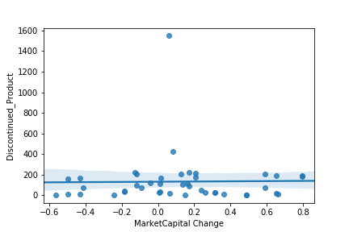

The Algorithms
Below shows a graphic for the number of discontinued products matched again the company's market cap changes from 2007-2017.
The following 10 companies were found to have the most discontinued cosmetic products:


Analysis I:
The chemicals used in discontinued products across major brands were analyzed to determine a link between certain chemicals. After web-scrapping from the Ulta’s website, a cosmetics wholesaler, we used a machine learning algorithm to determine the likelihood of a product to be discontinued based on the chemicals found in the database of discontinued products.
Summary: We conducted a hypotheisis test to determine whether there is a significant linear regression between an independent variable Discontinued Product number and a dependent variable Market Capital % change.The test focuses on the slope of the regression line: Market Capital % change = B0 + B1(Discontinued Product number).
Our result shows that R-squared (R2): -1.1932251458606866.
Which means that the the model fits our data very badly. In our next step, we would like to have revise our thesis, and rerun the model.Market Capital Change Regression Model
Analysis II:
The chemicals used in discontinued products across major brands were analyzed to determine a link between certain chemicals. After web-scrapping from the Ulta’s website, a cosmetics wholesaler, we used a machine learning algorithm to determine the likelihood of a product to be discontinued based on the chemicals found in the database of discontinued products.
| precision | recall | f1-score | support | |
|---|---|---|---|---|
| 0 (still on the market) | 0.87 | 0.32 | 0.46 | 1578 |
| 1 (discontinued) | 0.87 | 0.99 | 0.93 | 7395 |
Logistic Regression Jupyter Notebook Code
Web Scrapping Jupyter Notebook Code